機械学習とディープラーニング
Emacs org-mode
eugen@tworks.co.jp
中国の手書き認識
(Chinese Handwriting Recognition)

画像自動アノテーション
(Automatic Image Annotation)
| 入力 | 出力 |
|---|---|
| man in black shirt is playing guitar （ギターを引いている黒いシャツの男性） |
| 入力 | 出力 |
|---|---|
| black cat is sitting on top of suitcase （スーツケースの上に座っている黒猫） |
誤差
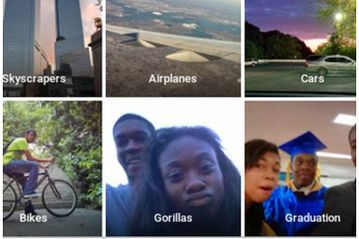
人工知能とは
(Artificial Intelligence)
人工的にコンピュータ上などで人間と同様の知能を実現させようという試み、あるいはそのための一連の基礎技術を指す
具体的には
- 人間の使う自然言語を理解したり
- 論理的な推論を行ったり
- 経験から学習する
コンピュータプログラムなどのことをいう。
機械学習とは
(Machine Learning)
人工知能における研究課題の一つで、経験(データ)によって賢くなるアルゴリズムの研究を指す
具体的には、
- データから知識・ルールを自動獲得する
- データの適切な表現方法も獲得する
- 人工知能の中で、人が知識やルールを明示的に与える方法の限界から生まれてきたもの
機械学習の分類
- 教師あり学習 Supervised Learning
- 教師なし学習 Unsupervised Learning
- 強化学習 Reinforcement Learning
- …
教師あり学習
(Supervised Learning)
入力xから出力yへの関数 f(x)=yを訓練事例{(xi, yi)}を元に学習
目的：汎化
(Generalization)
学習後、そのf(x)で、訓練事例以外のxからも適切なyを予測できること
例1: スパム分類
| 入力 | 出力 |
|---|---|
| メール | スパム or 普通 |
例2: 株価予測
| 入力 | 出力 |
|---|---|
| 株価に関係する全情報 | 明日の株価の予測 |
教師あり学習のフェーズ
少なくとも2つのフェーズに分かれている
- 学習フェーズ Training Phase
- 適用フェーズ Application Phase
学習フェーズ Training Phase
f(x)の学習のため、訓練事例(Training Data)が採用される
| 入力 (画像） | 出力 (数字) |
|---|---|
 |
2 |
 |
5 |
 |
2 |
 |
1 |
| … |
適用フェーズ Application Phase
訓練事例で学習の後、fで任意な入力から出力を予測する
| 入力 (画像） | 出力 (数字) |
|---|---|
|
? |
 |
? |
学習する関数について
訓練集合の誤差をOにさせる関数fは無限にあるが、訓練事例以外のxでも適切なyを予測できるか、 学習フェーズ後は分からない
「訓練集合の誤差が低い」より「適用フェーズの誤差が低い」のほうが大事
→教師あり学習で普通はもう一つのフェーズがある：検証フェーズ Validation Phase
極端な例
.NetのDictionary<x → y>をｆとして使って、学習フェーズで
foreach (pair in 訓練集合) dictionary[pair.x] = pair.y;
をすれば、訓練集合の誤差は「０」になるが、訓練事例意外のxから予測ができない
→汎化できない
検証フェーズ
(Validation Phase)
テスト集合を使う
テスト集合のxからfでyを予測して、テスト集合のy（正確）と比較して、テスト誤差を特定
| 入力 (画像） | 予測 (数字) | 正解 (数字) |
|---|---|---|
 |
0 | 2 |
 |
5 | 5 |
| … | … | … |
モデル選択
(Model Selection)
複数（「モデル」とも言われる）fを学習し、それぞれのテスト誤差を特定して、低いテスト誤差のfを選択
簡単な例
xもyも一次元
正弦曲線から取得した訓練事例

4つのモデルを学習してみる
| M | 関数 |
|---|---|
| 0 | f(x)=a |
| 1 | f(x)=a+bx |
| 3 | f(x)=a+bx+cx2+dx3 |
| 9 | f(x)=a+bx+cx2+dx3+…+jx9 |

教師なし学習
(Unsupervised Learning)
入力xのみから学習する
例1:クラスタリング
似ているデータをまとめてグループに分ける
| 入力 | 出力 |
|---|---|
| 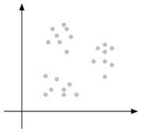 | 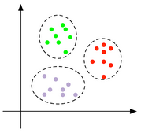 |
例2:異常検知
(Anomaly Detection)
入力 : 発注のPriceとQuantity、口座の可能額、銘柄の市場情報
出力 : 通常と異なるアクセスパターン（誤入力？不正アクセス？など）
強化学習 Reinforcement Learning
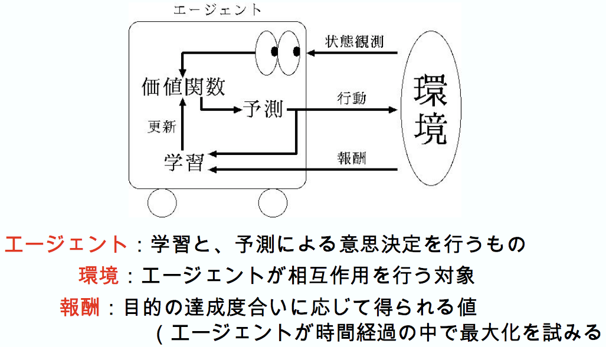
例：テレビゲーム
Atari Breakoutというゲーム http://youtu.be/V1eYniJ0Rnk
Big Dog Robot
深層学習 Deep Learning
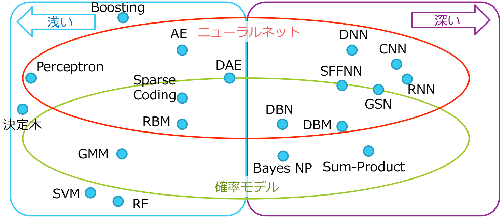
fとして使えるモデルと学習方法が沢山ある
その中の一つの柔軟でシンプルなDNNである
ニューラルネットワーク
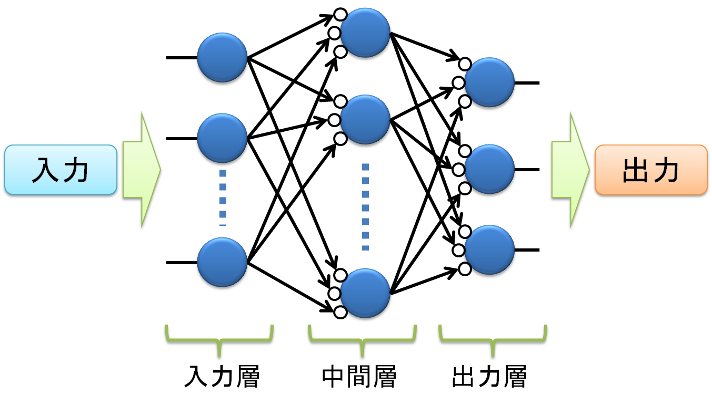
ニューロン
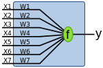
f(x): y = x1 w1 + x2 w2 + … + x7 w7
w1…w7の値を学習中に決める
Deep Neural Network (DNN)
深い階層を持ったニューラルネットワークのこと
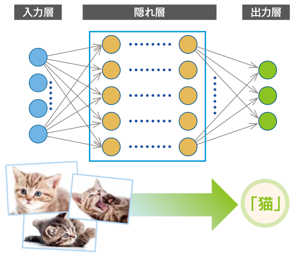
モデルのパラメータが多い
- 浅いニューラルネットワークのBack Propagationと言われる効果的な学習方法は、1975年に発明された
- DNNでは、学習すべきパラメータと層が多いので、Back Propagationのようなアルゴリズムが非常に時間がかかる
- 深いニューラルネットワークは実際に使われていなかった
- 2000年以降、深層学習の学習方法がいくつか発明される
- ~2009年以降、深層学習が流行って、沢山の応用が開発された
オートエンコーダ
DNNの学習のためにオートエンコーダが使える

オートエンコーダ
- 入力データの集合を出力層で再現できるように学習
- 浅いから速くできる
- オートエンコーダの中間層が狭い→圧縮と解凍
- 圧縮＝抽象化=汎化
層ごとにオートエンコーダを学習
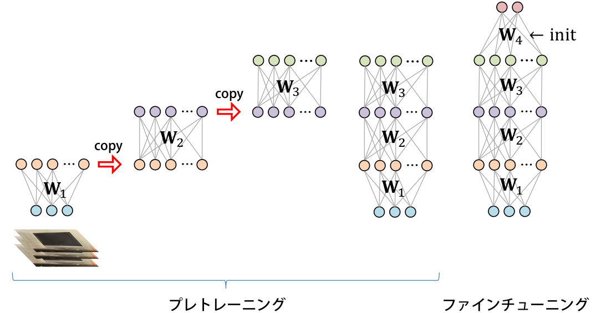
抽象化 (Abstraction)
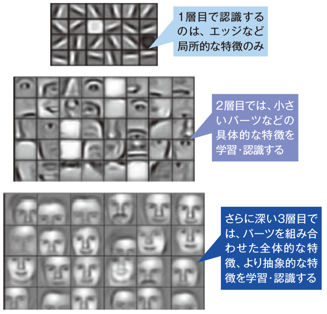
抽象化 (Abstraction)
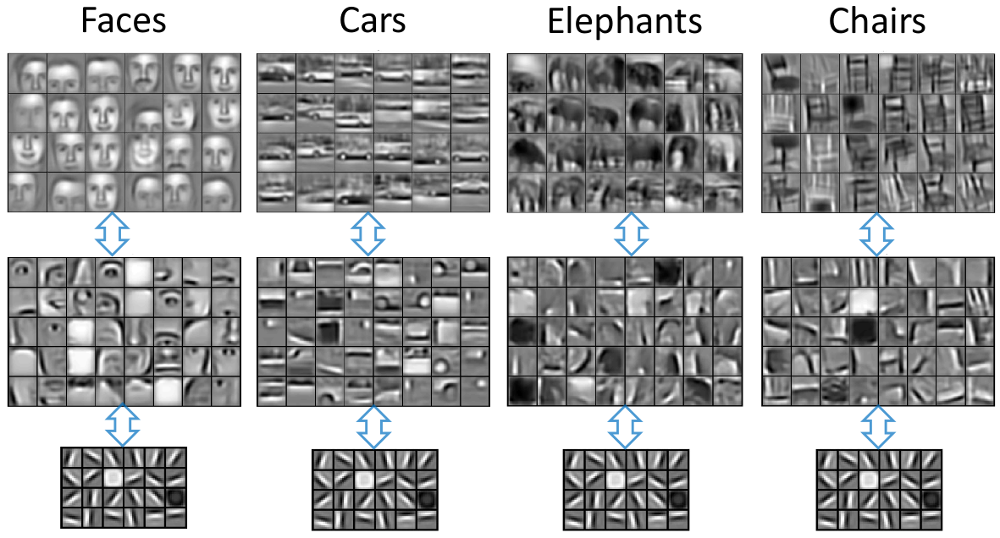